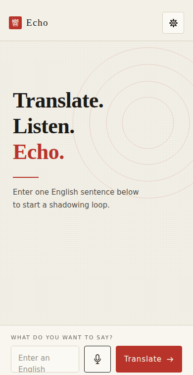
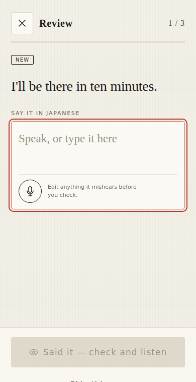
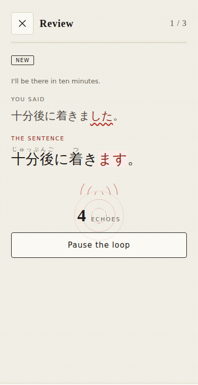
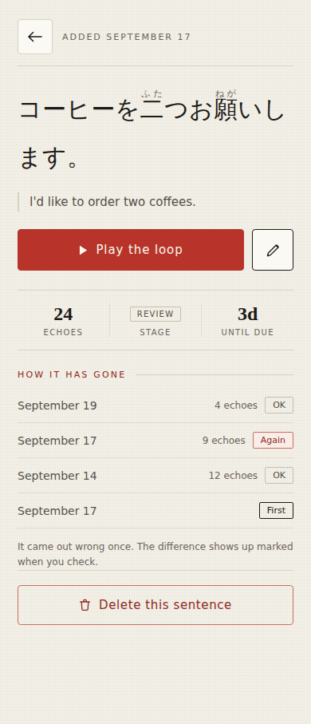

Translate.
Listen.
Echo.
Write one English sentence. Echo turns it into Japanese and loops it back at you until the shape of it sticks in your mouth, not just your notes.

Works with the plane door shut
Once it has loaded, it keeps going with no connection at all. Your sentences live on your own device.
No account, ever
Nothing to sign up for. The key you use for translation is saved on your device and shared with nobody.
Out loud, every time
Shadowing means speaking. Every sentence you keep is one you have actually said, at speed — not one you recognised on a card.
What it looks like



Three moves, on repeat
Say it in English
Type or speak one sentence — whatever you actually wanted to say today. Echo asks your translator of choice for natural Japanese, in both casual and polite, with a reading over every kanji.
Echo the loop
It reads the Japanese aloud, waits the length of the line, and reads it again. You speak over the top. The count climbs while you do — that is the whole exercise.
Come back when it's due
Sentences return on their own, spacing further apart each time you get one right — with a quiet reminder when a batch is waiting, if you want one. You answer with two buttons: Again, or OK.
Yours to take anywhere
Already use Anki? Send your sentences over whenever you like, with everything you have practised so far — nothing starts again from zero. And a plain backup file moves the whole library to another phone, or just keeps a copy safe.